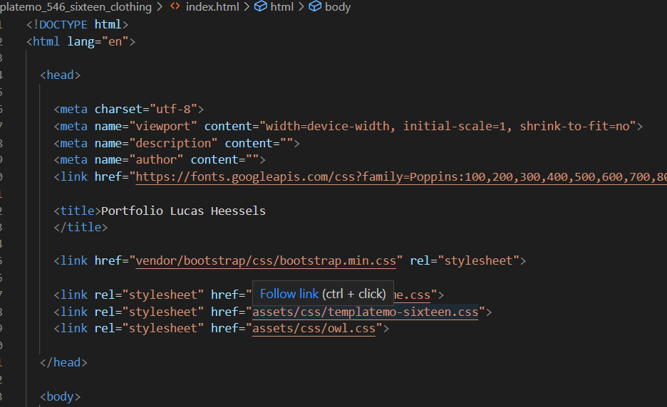
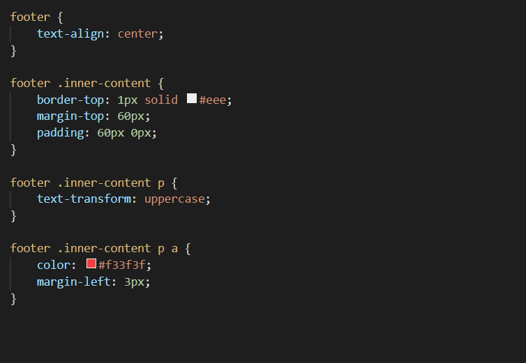

Terug



HTML & CSS
HTML is een programmeertaal die gebruikt word bij het basisontwerp en tekst van een website te maken. Naast HTML maak je bij het bouwen van een website gebruik van CSS. CSS is een taal die gebruikt wordt voor de opmaak van de website. Het geeft je de mogelijkheid om kleuren en effecten aan je pagina toe te voegen. Dit heb ik geoefend doormiddel van een voorbeeldwebsite waarbij we verschillende onderdelen konden aanpassen om te oefenen. In de afbeelding hiernaast is bovenaan HTML code te zien met daaronder CSS code. zoals te zien is is HTML gericht op content en CSS op de opmaak daarvan.
Template
Na het oefenen was het tijd om een tamplate te zoeken die ik vervolgens kon aanpassen naar mijn eigen smaak. Hiervoor heb ik gekeken naar een indeling die er zowel mooi is als nuttig voor hetgaan waar ik hem voor ga gebruiken, namelijk een portfolio voor deze minor. De template was zeer bruikbaar, en bevatte veel elementen die ik kon gebruiken. De rest heb ik zelf toegevoegd om de website meer naar mijn smaak te maken, zoals video elementen en het breder maken van foto's. Hoe meer ik met de template bezig was hoe meer codetaal ik kende en wist hoe het toegapast kon worden. Ook bijvoorbeeld het idee om meerdere files te maken met hyperlinks was niet in de template inbegrepen dit heb ik zelf toegevoegd om veel informatie overzichtelijk aan mijn website toe te voegen.
Databases
Hoe zit een database in elkaar? Eerder werdt hiervoor altijd gebruik gemaakt van XML, deze vorm database maakt gebuikt van codetaal ongeveer gelijk aan HTML. Ook Java heeft een mogelijkheid om database te creëren doormiddel van JSON. Deze taal is gemakkelijker dan XML waardoor hij inmiddels zelfs vaker gebruikt wordt. Om een database op te slaan kan gebruik gemaakt worden van google firebase. Een belangrijk ding dat we geleerd hebben is dat data nooit op de front-end moet worden opgeslagen maar in de backhand op een aparte server.
Toepassing smart connection (business context)
Tijdens deze minor heb ik veel geleerd over Data en coderen. Deze technieken kunnen in de dagelijkse bedrijfsvoering worden toegepast bij het maken van een website en het ontwikkelen van software. Tijdens mijn project heb ik deze kennis al goed toe kunnen passen. Aanvankelijk wist ik niks over coderen en hoe dit eruit ziet, nu kan ik al zelf templates aanpassen en hoe langer ik hier mee bezig ben hoe meer ik er over te weten kom.
Mijn project ging over het samenbrengen van data en het kijken naar welke data nog ontbreekt. Deze data wordt geleverd in de vorm van ingewekkelde codes die ik aanvankelijk niet begreep. Doormiddel van deze minor begrijp ik de digitale kant van de bedrijfsvoering een stuk beter dan ik aanvankelijk deed. Het is belangrijk om dit goed te begrijpen omdat het in de toekomst steeds belangrijker wordt. Je kunt als bedrijf niet meer zonder Big Data, grote bedrijven maken hier namelijk wel gebruik van. Door hier niet op in te spelen wordt het onmogelijk om tegen grote spelers in de markt te concurreren. Om de continuteit te waarborgen is het belangrijk om trends te volgen, en deze zijn in de tijd waarin we nu leven vrijwel altijd digitaal van aard.